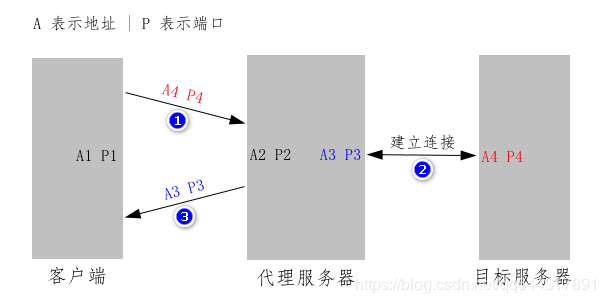
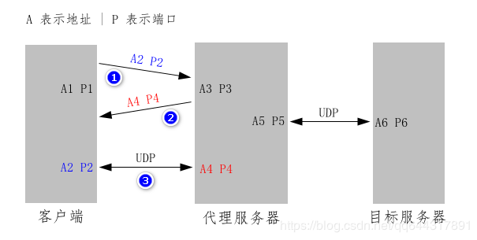

SOCKS5 协议的作用是为应用层提供代理服务，通信过程分为三个阶段：
- 握手阶段。客户端跟代理服务器确定协议的版本和认证方法，完成身份认证；
- 确定服务阶段。客户端向代理服务器说明需要提供何种代理服务；
- 转发数据阶段。代理服务器在客户端和目标服务器之间转发数据。
在确定服务阶段，客户端要向代理服务器发送一个请求，代理服务器要给客户端发送一个应答。如果是要进行 TCP 代理，客户端发送的请求须包含目标服务器的地址和端口；代理服务器成功连接到目标服务器后，须在应答中给出代理服务器与目标服务器通信用的地址和端口号。

如果是要进行 UDP 代理，则目标服务器的地址和端口号是包含在每一个 UDP 数据报中的。客户端发送的请求中包含的是 UDP 数据报的源地址和源端口；代理服务器在应答中给出的是代理服务器用来接收 UDP 数据报的地址和端口号。

不管是 TCP 代理还是 UDP 代理，代理服务器和客户端之间都要建立一条 TCP 连接来完成前面两个阶段。
👉 握手阶段
握手的目的是确定协议的版本和认证方法，并依据选定的认证方法进行认证。
客户端发送请求
客户端发送给代理服务器的 方法选择消息 格式如下（表格第二行表示长度，单位字节）：
| ver | nmethods | methods |
|---|---|---|
| 1 | 1 | 1-255 |
ver协议的版本号，固定为0x05nmethods认证方法的数量，即第三个字段methods的长度methods认证方法的列表，每个字节代表一种认证方法
目前，绝大多数客户端只支持下面两种认证方法：
0x00NO AUTHENTICATION REQUIRED，无需认证0x02USERNAME/PASSWORD，用户名密码
如果客户端不支持用户名密码认证，应该把 nmethods 设为 0x01，并在 methods 中填上 0x00，实际发送的数据如下：
1 | ver nmethods methods |
SOCKS 协议把「不需要认证」也视为一种认证方法
如果客户端支持用户名密码认证，应该把 nmethods 设为 0x02，然后在 methods 中填上 0x00 和 0x02，实际发送的数据如下：
1 | ver nmethods methods |
客户端发送的方法选择消息可用下面结构体封装：
1 | typedef struct { |
代理服务器发送应答
代理服务器收到客户端的消息后，先检查 methods 中是否包含要求的认证方法，然后向客户端发送一条 认证方法选择消息，以说明被采纳的认证方法，格式如下：
| ver | method |
|---|---|
| 1 | 1 |
ver协议的版本号，固定为0x05method采纳的认证方法，决定后续的动作
下面是 method 的三种常见取值：
0x00NO AUTHENTICATION REQUIRED，无需认证0x02USERNAME/PASSWORD，用户名密码0xffNO ACCEPTABLE METHODS，没有能够接受的认证方法
若不需要进行认证，就把 method 设为 0x00，实际发送给客户端的数据如下：
1 | ver method |
若代理服务器要求通过用户名密码认证，但客户端发来的消息中的 methods 字段不包含代表用户名密码认证方式的 0x02，则代理服务器应该把 method 设为 0xff，表示没有能够接受的认证方法，此时客户端应关闭连接。
下面函数可检查 methods 中是否包含要求的认证方法。函数需要两个参数：第一个参数 request 指向客户端发来的方法选择消息；第二个参数 method 是要查找的认证方法。若找到，返回 1，否则返回 0
1 | int method_exists(client_hello_t * client_hello, uint8_t method) |
代理服务器发送的方法选中消息可用下面结构体封装：
1 | typedef struct { |
此外，SOCKS5 还定义了认证方法在下面三种取值时的含义：
0x01GSSAPI，采用 GSSAPI0x03 - 0x7eANA ASSIGNED，由互联网数字分配机构定义0x80 - 0xefRESERVED FOR PRIVATE METHODS，保留，可定义私有的认证方法
进行用户名密码认证
如果代理服务器要求通过用户名密码认证，客户端在收到代理服务器的方法选中消息后，就要向代理服务器发送一个包含用户名和密码的消息，格式如下：
| ver | ulen | uname | plen | passwd |
|---|---|---|---|---|
| 1 | 1 | 1-255 | 1 | 1-255 |
ver认证协议的版本号，固定为0x01ulen用户名的长度uname用户名plen密码的长度passwd密码
若客户端提供的用户名是 admin，密码是 123456，实际发送的数据如下：
1 | ver ulen uname plen passwd |
代理服务器校验后，给客户端发送一个说明认证结果的消息，格式如下：
| ver | status |
|---|---|
| 1 | 1 |
ver认证协议的版本号，固定为0x01status认证结果，只有等于0x00时才表示认证成功
🎯 确定服务阶段
客户端发送请求
客户端发送一个请求，说明需要代理服务器提供何种服务，格式如下：
| ver | cmd | rsv | atyp | dst.addr | dst.port |
|---|---|---|---|---|---|
| 1 | 1 | 1 | 1 | Variable | 2 |
ver协议的版本号，固定为0x05cmd命令，说明需要代理服务器提供何种服务，取值如下：0x01CONNECT，建立 TCP 连接（提供 TCP 代理服务）0x02BIND，用于 FTP 等罕见场景0x03UDP，关联 UDP 请求（提供 UDP 代理服务）
rsvreserved 的缩写，保留，无意义，固定为0x00atypaddress type 的缩写，下一个字段的类型，取值如下：0x01下一个字段dst.addr是 4 个字节的 IPv4 地址0x03下一个字段dst.addr的第 1 个字节是域名长度，之后是域名本身0x04下一个字段dst.addr是 16 个字节的 IPv6 地址
dst.addrdestination address 的缩写，目标地址或源地址dst.port目标端口或源端口
最后两个字段 dst.addr 和 dst.port 在不同的情况下有不同的含义：在 TCP 代理中，是目标服务器的地址和端口号；在 UDP 代理中，是 UDP 数据报的源地址和源端口号。
代理服务器发送应答
代理服务器收到客户端的请求后，要给客户端一个应答，格式如下：
| ver | rep | rsv | atyp | bnd.addr | bnd.port |
|---|---|---|---|---|---|
| 1 | 1 | 1 | 1 | Variable | 2 |
ver协议的版本号，固定为0x05rep状态码，说明客户端的请求是否能够得到满足，取值如下：0x00succeeded，成功0x01general SOCKS server failure，一般错误0x02connection not allowed by ruleset，连接不被规则集所接受0x03Network unreachable，网络不可到达0x04Host unreachable，主机不可到达（主机名无效）0x05Connection refused，连接被拒绝0x06TTL expired，TTL 过期0x07Command not supported，命令不支持0x08Address type not supported，地址类型不支持0x09 - 0xffunassigned，未指派（暂无意义）
rsv保留，无任何作用，固定为0x00atyp下一个字段的类型，取值如下：0x01IPv40x03域名0x04IPv6
bnd.addr地址bnd.port端口
同样，最后两个字段 bnd.addr 和 bnd.port 在不同的情况下有不同的含义：在 TCP 代理中，是代理服务器与目标服务器通信使用的地址和端口号；在 UDP 代理中，是代理服务器用来接收来自客户端的 UDP 数据报的地址和端口号。
TCP 代理
如果客户端要代理服务器提供 TCP 代理服务，应该把 cmd 设为 0x01。如果目标地址的类型是 IPv4，应该把 atyp 设为 0x01，接着 4 个字节的 IPv4 地址和 2 字节的端口号。
例如，客户端要访问 192.168.1.3:80，实际发送的请求数据如下：
1 | ver cmd rsv atyp dst.addr dst.port |
若代理服务器与目标服务器成功建立连接，使用的 IP 地址和端口号是 192.168.1.2:58328，实际发送的应答数据如下：
1 | ver cmd rsv atyp bnd.addr bnd.port |
在实际应用中，代理服务器常常忽略应答中的 bnd.addr 和 bnd.port 两个字段，并用 0 填充。
UDP 代理
如果客户端要代理服务器提供 UDP 代理服务，应该把 cmd 设为 0x03。假如客户端准备将 UDP 数据报从 192.168.0.2:59285 发出，实际发送的请求数据如下：
1 | ver cmd rsv atyp dst.addr dst.port |
若代理服务器希望从 192.168.0.3:1080 接收 UDP 数据报，实际发送的应答数据如下：
1 | ver cmd rsv atyp bnd.addr bnd.port |
C 语言对请求的封装
可用下面结构体封装客户端发送的请求：
1 | typedef struct { |
通过上述的结构指针来访问发送缓存，可以很方便地读写各个字段的值。
1 |
|
在填写目标地址和目标端口时，用到下面两个函数：
inet_addr()将一个点分十进制表示的 IP 地址转换成网络字节序htons()将端口号从主机字节序转换成网络字节序
C 语言对应答的封装
代理服务器发送给客户端的应答可用下面结构体封装：
1 | typedef struct { |
代理服务器用一个 request 结构指针来访问接收缓存，可以很方便地解析客户端发来的请求，同时准备一个 reply 结构的指针来访问发送缓存，可以很方便地解设定应答的各个字段。
1 | char recv_buf[1024]; |
代理服务器先检查 cmd，以确定客户端的需求，若服务器只支持 TCP 代理，可使用下面条件判断语句：在 cmd 不是 0x01 时，将状态码 rep 设为 0x07，表示命令不支持。
1 | if (req->cmd != 0x01) { |
然后检查 atyp，以确定地址的类型，若代理服务器不支持 IPv6，可使用下面条件判断语句：在 atyp 是 0x04 时，将状态码 rep 设为 0x08，表示地址类型不支持。
1 | if (req->atyp == 0x04) { |
📡 转发数据阶段
TCP 代理
这个阶段，代理服务器只需简单地在客户端和目标服务器之间转发数据。对于 TCP 代理，使用的连接是现有的连接，即前面进行握手和确定服务两个过程的连接。
下面函数是在两个套接字之间转发数据，将两个套接字的描述符将作为参数调用即可。
1 |
|
UDP 代理
在第二阶段，客户端说明了其发送 UDP 数据报使用的地址和端口，代理服务器说明了其用来接收 UDP 数据报的地址和端口。至于目标地址和端口号，则是包含在每个 UDP 数据报中。
客户端必须在 UDP 数据报中给出目标服务器的地址和端口，否则代理服务器无法知道要将 UDP 数据报发往何处；代理服务器在收到目标服务器的响应数据后，也要在前面加上目标服务器的地址和端口后，才能返回给对应的客户端。
客户端发出的 UDP 数据报和代理服务器返回的 UDP 数据报使用相同的格式，具体如下：
| rsv | frag | atyp | dst.addr | dst.port | data |
|---|---|---|---|---|---|
| 2 | 1 | 1 | Variable | 2 | Variable |
rsv保留，无意义，固定为0x0000frag分片的序号，一般为0x00atyp下一个字段的类型dst.addr目标地址dst.port目标端口data数据
如果一个 UDP 数据报所携带的数据并不完整，完整的数据由若干个 UDP 数据报有序拼接而成，这种数据报就称为 分片，分片的序号通过 frag 字段给出。如果该字段被设为 0x00，则表示该 UDP 数据报不是分片，携带的是完整的数据。
在代理服务器和客户端之间传输的 UDP 数据报可用下面结构体封装：
1 | struct datagram { |
实际上，代理服务器要维护一个客户端和目标服务器之间的关系表，这样代理服务器才知道哪些 UDP 数据报对应是合法的，以及在收到目标服务器的响应数据时，才能正确返回给客户端。
Licence: CC BY-NC-ND 4.0